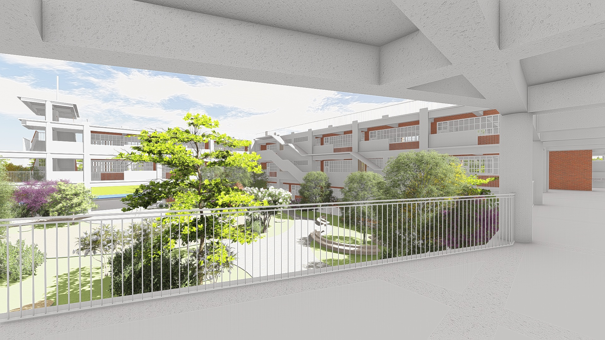

陳威甫
建築師事務所
CWF ARCHITECTS & ASSOCIATES
DESIGN PHILOSOPHY
以純粹幾何，構築校園的理性能量，探索校園結構的理性能量，形塑孩子每日成長的學習場景與記憶空間。
我們將校園空間簡化為最純粹的「點、線、面」。
在垂直與水平的構造中，置入孩童活動場所的純淨，讓建築成為引導孩童思考的理性座標。
建築不只是容器，而是教育的一部分。
我們設計的不是建築，而是孩子每天成長的學習場景與記憶空間。
PROJECT 01
臺中市北屯區南興國民小學
入口即學習起點 | Campus as Art

以「孩子視角」重新思考校園空間，讓走廊可以探索、操場可以學習、角落可以發現。
PROJECT 02
臺中市北屯區南興國民小學
構造理性與光影 | Tectonics & Light

將教學單元模組化，如同畫布上的幾何方塊，創造井然有序且具彈性的學習場域。
SERVICES
- 校園整體規劃
- 教學建築設計
- 校園景觀設計
- 工程監造
- 空間再造
- 教育空間策略